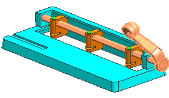

编辑装配结构
您可以在装配导航器中拖动组件来编辑装配结构。
-
在装配导航器背景中右击并选择全部打包
 。
。 des02_hole_punch_assm_mm
des02_hole_punch_assm_mm des02_hp_lever_mm des02_hp_punch_mm x 3
des02_hp_punch_block_mm x 3
des02_hp_shaft_mm des02_hp_frame_mm
des02_hp_lever_mm des02_hp_punch_mm x 3
des02_hp_punch_block_mm x 3
des02_hp_shaft_mm des02_hp_frame_mm -
在装配导航器中，拖动des02_hp_lever_mm 到 des02_hp_shaft_mm 节点上方。
-
在拖放组件信息框中，点击确定。
des02_hp_lever_mm 组件现在成为新建的子装配 des02_hp_shaft_mm 中的一个成员。
des02_hole_punch_assm des02_hp_punch_mm x 3
hp _punch_block_mm x 3
 des02_hp_shaft_mm
des02_hp_shaft_mm des02_hp_lever_mm des02_hp_frame_mm
des02_hp_lever_mm des02_hp_frame_mm -
选择 des02_hp_shaft_mm 节点。
所有组件在图形窗口中都被选中。

-
关闭所有部件。